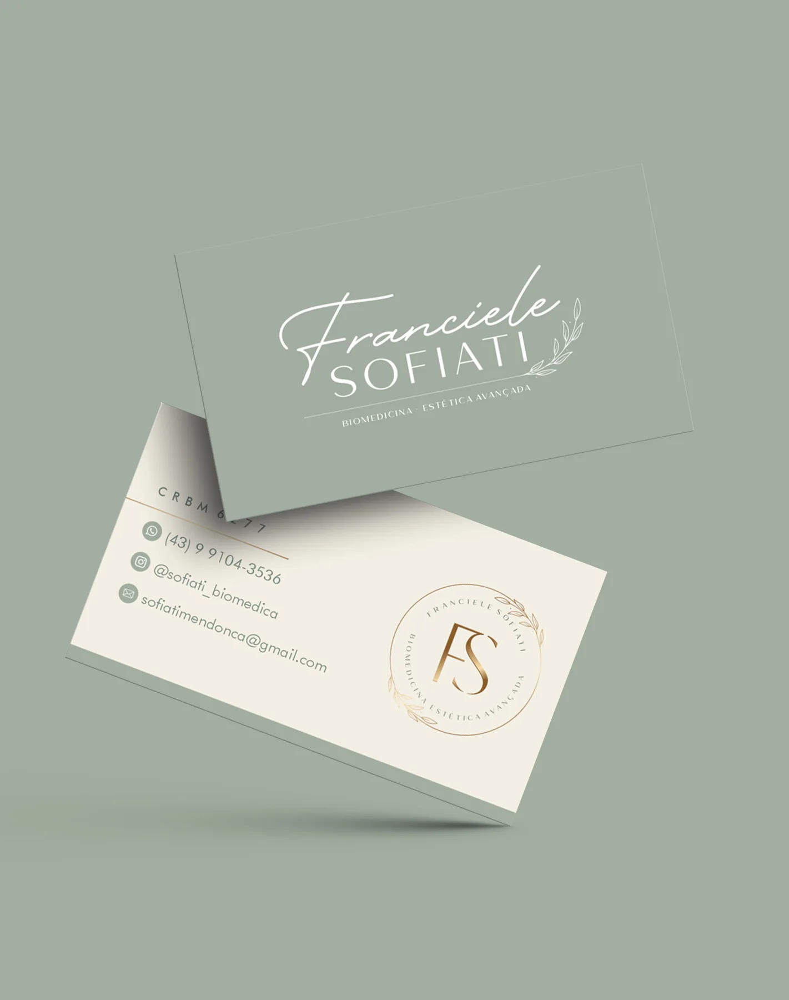
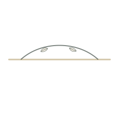

Aftercare matters
Aftercare helps protect comfort, consistency and responsible expectations.
tabbed service reveal
Concept 12 · Vital · Testimonials
The testimonial system is ready for approved real stories and does not invent outcomes or quotes.


dermatology portal pictograms
Logo, FS monogram, portrait treatment, botanical detail and custom icons are built as a local Sofiati asset pack for this page.
dermatology portal
This area is prepared for approved real feedback only.
Aftercare helps protect comfort, consistency and responsible expectations.
tabbed service revealNo patient images, quotes or private details are used without approval.
WhatsApp, email and Instagram are the public contact routes.
Short notes make laser, skin and aftercare easier to understand.
dermatology portalConsultation
A short consultation route keeps decisions calm, private and evaluation-led.
CRBM 6277 · Londrina, PR